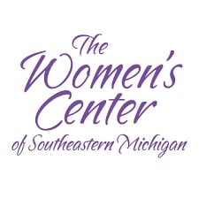
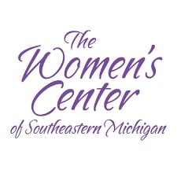

In holding true with my mission and values, much of my work experience revolves around the intersection of people, technology, and social justice issues.
 

The Women's Center of Southeastern Michigan, Data Analytics and Strategy Intern
May, 2021 - June, 2021
About
Selected for the University of Michigan’s award-winning Development Summer Internship Program (D-SIP) as a Dobson Intern at The Women's Center of Southeastern Michigan, an Ann Arbor mental health and empowerment oriented nonprofit. During my 3 month stay with The Women's Center, I worked to deversify and streamline the donor experience. In doing so, I assessed current revenue generation methods, completed website analysis, implemented data analytic strategies, and evaluated donor platforms , presenting and adopting propositions to the nonprofit's board of directors. Additionally, I orchestrated a 5-day virtual walking campaign, exceeding individual contributions goals by 60% and successfully soliciting over $1,000 in product donations from local business partners.

Accountability, Non-Discrimination, Inclusion in Employment (ANDIE) Lab, Resarch Assistant
May, 2019 - Present
About
Currently conduct analytical and social science research under Dr. Angela Hall at the Michigan State University School of Human Resources and Labor Relations. Over the past two years, I have investigated workplace discrimination, with a focus on police reform, through Excel and SPSS data analysis, literature review, survey development, and focus group facilitation in collaboration with the NAACP and U.S. Department of Labor.

Michigan EcoData, Financial Director & Project Manager
January, 2021 - Present
About
Lead Michigan EcoData as Financial Director, successfully authoring two grant proposals and managing the organization's finances, fundraising, merchandise, and sponsor relations. Additionally, I lead and engage with project teams, see the projects I have worked on below!
- W22: Currently leading a nonprofit consulting challenge in collaboration with the Women's Center of Southeastern Michigan, streamlining their patient intake process and DEI initiatives.
- F21: Led the Data Visualization team in researching, crafting, analyzing, and visually presenting a quantitative survey, polling University of Michigan students’ awareness and advocacy for environmental policies.
- W21: Used ArcGIS and open source data to identify and propose potential urban farm locations in Lansing, MI.

The Development Summer Internship Program, Student Marketer
August, 2021 - January, 2022
About
Collaborated with the University of Michigan Office of Development staff to promote D-SIP to the University of Michigan student body and greater community, hosting informational sessions, presenting to Michigan Student Organizations, and managing social media accounts.